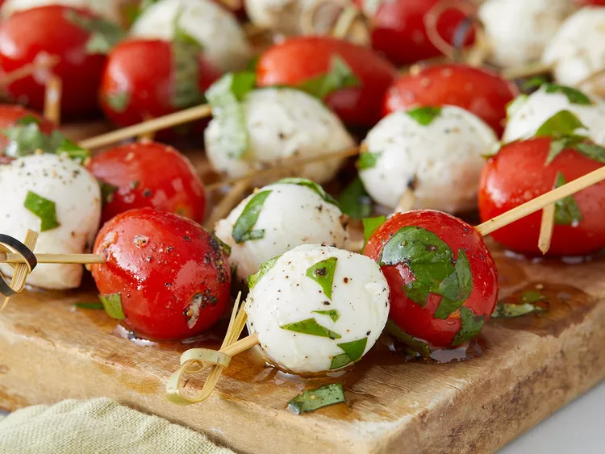

Description
These colorful caprese skewers with bite-sized portions of mozzarella cheese, tomato, and basil make the perfect appetizer for holiday parties.
Ingredients
- 20 cherry tomatoes
- 10 ounces mozzarella cheese, cubed
- 2 tablespoons extra virgin olive oil
- 2 tablespoons fresh basil leaves, chopped
- 1 pinch salt
- 1 pinch ground black pepper
- 20 toothpicks
- Gather all ingredients.
- Toss tomatoes, mozzarella, olive oil, basil, salt, and pepper together in a bowl until well coated.
- Skewer one tomato and one piece of mozzarella on each toothpick.